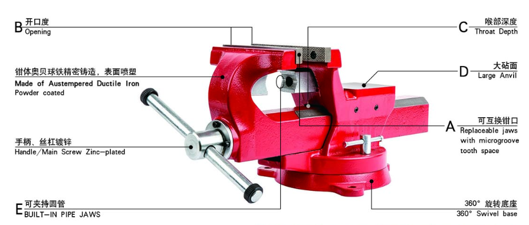
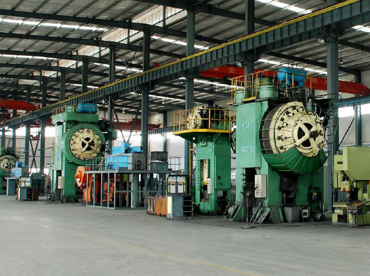

工作经历
莱州鸿源台钳制造有限公司 (2011年6月 - 2011年7月)
莱州鸿源台钳制造有限公司拥有50多年的台虎钳生产历史，是中国台钳生产行业的领军者。目前主要生产台虎钳、奥贝球铁（ADI）、汽车配件、工程机械配件和电力配件等产品，销往美国、加拿大、澳大利亚、日本和欧盟国家。
我于2011年的夏天在莱州鸿源台钳制造公司进行了为期一个月的金工实习，了解到了台钳厂从金属原材料的初级加工，到铸造锻造热处理等的诸多工序流程，参与了生产实践，对于机械制造有了更深层次的理解，也为了大学里的机械制造专业的学习打下了坚实的基础。
青岛洛林机械有限公司 (2012年7月 至今)
青岛洛林机械有限公司成立于1990年，扎根青岛，业务覆盖全球，主要面向欧洲，日本及美国的主机厂以及一二三级各个级别的供应商每年出口400多个集装箱，提供锻造和铸造机械类零部件，涵盖农业机械，工程器械，铁路系统和重型卡车零件等等。
自2012年高中毕业之后，我便在青岛洛林机械有限公司就职，历任实习生，经理助理，欧洲市场拓展专员等职位。
2018年，我与公司经理一道代表公司参展了当年的汉诺威工业博览会,在与公司老客户互通有无的同时，也拓展了新的潜在客户。
2019年，我独自代表公司出席参展了当年的杜塞尔多夫冶金压铸展览会(METEC)。从布展开始准备，陈列展品及宣传册，沟通协调展会各种事项，接待拓展客户，展会结束后首尾，都由我完成。本次展览会不仅使我受益匪浅，还为公司拓展了多个新客户。
Schaeffler AG (2017年5月 - 2017年11月)
舍弗勒集团(Schaeffler AG)是一家专注驱动技术的科技公司, 公司业务涉及汽车、工业等领域，年营业额约130亿欧元(2016年)，全球员工超过85000人，总部位于德国巴伐利亚州黑尔措根奥拉赫市。
我于2017年5月份开始在舍弗勒公司进行了为期六个月的本科阶段实习。我所在的部门为链条传动的研发部门，实习目标为理解链条传动振动的原理并探究吸能器对于汽车发动机的凸轮轴以及曲轴减震的效果。
研究的目标主要是三个不同品牌车型的发动机的曲轴和凸轮轴，因为它们各自的传动原理以及曲轴和凸轮轴的按照位置各不相同，因此可以更全面地分析吸能器的工作原理和效果。
双质量飞轮可以有效降低发动机旋转的不均衡性而造成传动系的扭转振动。一是可以减少离合器在接合或分离时的冲击，另一点是可以减少发动机的震动。而我的实习目标即研究在双质量飞轮上安装吸能器(Tilger)，并通过MATLAB和模拟仿真软件，分析其对于减少链条传动系统振动的帮助。
Stabilus SE

Bertrandt AG

Mercedes-Benz AG (ANÜ von Bertrandt)